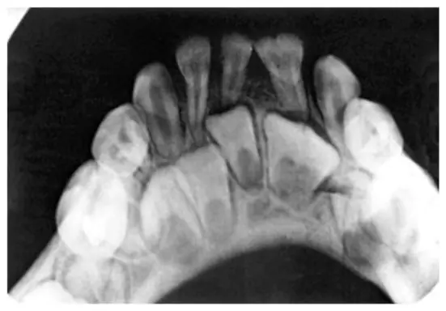
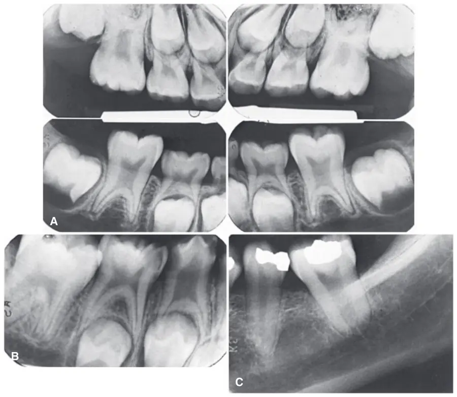

نسخه استخراجشده؛ ترجمه یا تأیید علمی انجام نشده است. وضعیت: captured
سه پدیدهی بههمچسبیده که روی تصویر شبیهاند — و یک آزمون ساده که دو تای اول را جدا میکند.

فیوژن (fusion): اتحاد دو جوانهی دندانی مجاور پیش از کامل شدن کلسیفیکاسیون. میتواند کامل یا نسبی باشد. شایعتر در دندانهای شیری و در ناحیهی قدامی مندیبل. شیوعش در جمعیتهای آسیایی و بومی بالاتر است و در دو جنس یکسان.
جمیناسیون (gemination): تلاش یک جوانهی واحد برای دو نیم شدن. شایعتر در ماگزیلای قدامی و باز هم در دندانهای شیری. شیوع دندانهای دوگانه در شیری ۰٫۵ تا ۱٫۶ درصد و در دائمی ۰٫۱ تا ۰٫۲ درصد.
و آزمون طلایی افتراق — این را حفظ کن: دندانها را بشمار. در فیوژن، شمارش یک دندان کم نشان میدهد؛ در جمیناسیون شمارش طبیعی است. تنها استثنا: وقتی یک دندان طبیعی با یک دندان اضافه فیوز شده باشد.
و صادقانه باید افزود: این افتراق «معمولاً آکادمیک است، چون تفاوت اندکی در مدیریت بیمار وجود دارد».
کنکرسنس (concrescence): اتحاد ریشهی دو دندان تنها از راه سمنتوم. اگر حین تکامل رخ دهد کنکرسنس واقعی و اگر بعداً رخ دهد کنکرسنس اکتسابی نام میگیرد. شایعترین محل: مولرهای ماگزیلا، بهویژه یک مولر سوم و یک دندان اضافه.
و خطر بالینی کنکرسنس، بزرگترین پیام این درس است: تصویر «همیشه کنکرسنس را آشکار نمیکند؛ دندانها ممکن است فقط در تماس نزدیک یا سوپرایمپوز باشند». و اگر ریشهها واقعاً متصل باشند، تعیین اینکه اتصال از راه سمنتوم است یا عاج (فیوژن) ممکن است ناممکن باشد. نبودِ فضای PDL قابل رؤیت میان دو ریشه سرنخ کمکی است.
پس چه میکنی؟ اگر روی تصویر شک کردی و قرار است یکی از دو دندان کشیده شود، تصاویر داخلدهانی با زوایای متفاوت یا CBCT با FOV کوچک بگیر — و به بیمار هشدار بده که تلاش برای کشیدن یکی ممکن است به خارج شدن ناخواستهی دیگری بینجامد.
تاورودونتیسم: جابهجایی عمودی کف اتاقک پالپ به سمت آپیکال و کوتاه شدن ریشهها. اتاقک پالپ از تاج تا عمق تنهی بلندشده امتداد مییابد.

و نکتهی کلیدی بالینی: این ویژگیها در معاینهی بالینی اصلاً دیده نمیشوند، چون تنه و ریشهها درون استخواناند. یعنی تشخیص، تشخیصی کاملاً تصویری است — و باید پیش از شروع درمان گذاشته شود.
روی تصویر: اتاقک پالپ کشیدهی عمودی، فورکای آپیکالتر، ریشهها و کانالهای کوتاهتر، و ابعاد تاج کاملاً طبیعی.
و چهار پیامد درمانی: اندو چالشبرانگیز است (کف پالپ آپیکال، آرایش غیرعادی کانال، کانالهای اضافه)، بهعنوان اباتمنت پروتز توصیه نمیشود چون ریشههای کوتاه پایداری نمیدهند، کشیدن بهدلیل فورکای آپیکال پیچیده است، ولی پیشآگهی پریودنتال بهتر است چون احتمال درگیری فورکیشن کمتر است.
و یک اشتباه افتراقی رایج: مولر در حال تکامل میتواند مشابه به نظر برسد. جداکننده: فورامن آپیکال پهن و ریشههای ناکامل در دندان در حال تکامل. و از نظر همراهی، تاورودونتیسم با هیپوفسفاتمی و با فراوانی بیشتر در تریزومی ۲۱ گزارش شده است. درمان لازم ندارد.
دیلاسریشن: خم تیز یا انحنای زیاد در تاج یا ریشه. دو علت ممکن: تروما به بخش کلسیفیهی دندان نیمهساخته و اختلال تکاملی. شایعتر در دندانهای خلفی و در ماگزیلا؛ و شایعترین محل دیلاسریشن ریشه پرمولرهای ماگزیلا است.
و مهمترین نکتهی تصویری این درس — علامت «چشم گاو»: اگر ریشه مزیالی یا دیستالی خم شود، روی پریاپیکال بهروشنی دیده میشود. ولی اگر باکالی یا لینگوالی خم شود، پرتو مرکزی تقریباً موازی با بخش منحرفشده میگذرد و انتهای ریشه بهصورت ناحیهی اوپک گرد یا بیضی با مرکز رادیولوسنت (فورامن آپیکال و کانال) دیده میشود — «bull's eye» — و فضای PDL پیرامون آن یک هالهی رادیولوسنت میسازد.
و پیامدش: دیلاسریشن ریشه معمولاً درمان نمیخواهد، ولی کشیدن و اندو را پیچیده میکند — بهویژه اگر جراح بدون تصویر پیش از عمل شروع کند.